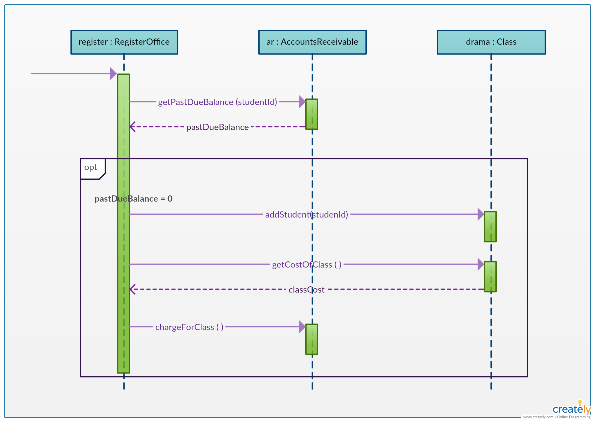

It represents the behavioral aspects of a system. Sequence diagram shows the interactions between the objects by means of passing messages from one object to another with respect to time in a system.
Elements in sequence diagram
Sequence diagram contains the objects of a system and their life-line bar and the messages passing between them.
Object
Objects appear at the top portion of sequence diagram. Object is shown in a rectangle box. Name of object precedes a colon ‘:’ and the class name, from which the object is instantiated. The whole string is underlined and appears in a rectangle box. Also, we may use only class name or only instance name.
Objects which are created at the time of execution of use case and are involved in message passing , are appear in diagram, at the point of their creation.
Life-line bar
A down-ward vertical line from object-box is shown as the life-line of the object. A rectangle bar on life-line indicates that it is active at that point of time.
Messages
Messages are shown as an arrow from the life-line of sender object to the life-line of receiver object and labeled with the message name. Chronological order of the messages passing throughout the objects’ life-line show the sequence in which they occur. There may exist some different types of messages :
Synchronous messages:Receiver start processing the message after receiving it and sender needs to wait until it is made. A straight arrow with close and fill arrow-head from sender life-line bar to receiver end, represent a synchronous message.
Asynchronous messages:For asynchronous message sender needs not to wait for the receiver to process the message. A function call that creates thread can be represented as an asynchronous message in sequence diagram. A straight arrow with open arrow-head from sender life-line bar to receiver end, represent an asynchronous messagen.
Return message:For a function call when we need to return a value to the object, from which it was called, then we use return message. But, it is optional, and we are using it when we are going to model our system in much detail. A dashed arrow with open arrow-head from sender life-line bar to receiver end, represent that message.
Response message:One object can send a message to self. We use this message when we need to show the interaction between the same object.

For more info, check out:
How the Simulation UI is organised:
Target Area: The area on the right higlights the result we want to achieve. You can hover over the components
to see hints to achieve our desired result for that component. Remember, always go from left to right, top to bottom.
Text Area: The area on the left is where we are supposed to write out components of sequence diagram. The order from top-bottom
should be maintained, and if you mess up you can see the changes reflected immediately in the interative area.
Interactive Area: This helps the user to let go of the text area for a click based approach
Presentation Area: This highlights the sequence components, in case the user wants to refresh over them.
Solution Area: The user can jump to the solution in case he has written everything and wants to confirm or if he is stuck
and wants to directly view the answer.
Following are our test case-specific introductions:
Auction System:
An auction system takes place in real time, where a multiple bids take place for multiple items, and if the bid is met the item is sold.
Elements in the sequence diagram:
Objects
PurchaserAgent: acts as initiator (the buyer)
FacilitatorAgent: acts as mediator (the middleman)
SellerAgent: acts as retaliator (the seller)
Messages
Synchronous messages: Request and Get Arrows, as they need to be completed before proceeding
Response messages: the return messages, generally return acknowledgment for success and failure of current bid/condition
SellerAgent: acts as retaliator (the seller)
Fragments
Loop: The bidding loop iterates for 5 sec
alt: used for if else, status of item
Miscellaneous
Notes: Used to point out and further explain the current condition
self call: call to the same object
timer: indicates the current timer/li>
Food Delivery System:
An Food Delivery System processes an order, and communicates with the kitchen and then the delivery guy to finally deliver to the caller.
Elements in the sequence diagram:
Objects
Actors: The components buyer and delivery guy, as they are not entities but singular, are represented as actor
Objects: The restaurant and kitchen function (the rectangualer boxes) function as a regular object.
Messages
Synchronous messages: Passing messages from left to right, from buyer to restaurant to kitchen and restaurent to delivery boy
(restaurant is mediator)
Response messages: the kitchen, when food is prepared and the caller, when food is received
Asynchronous: the tracking of the delivery buy
Miscellaneous
Actiivation: Used to highlight the different participants, and their life cycle